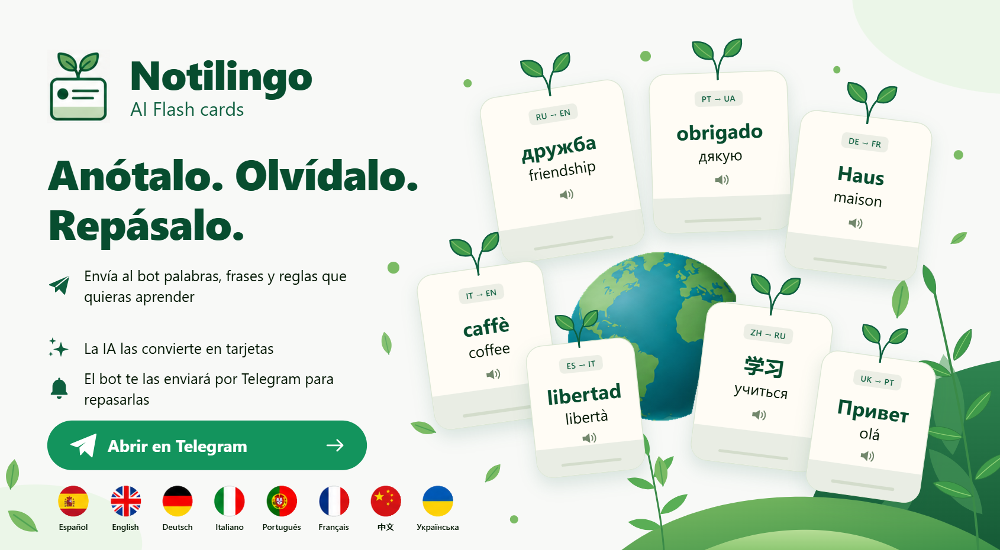
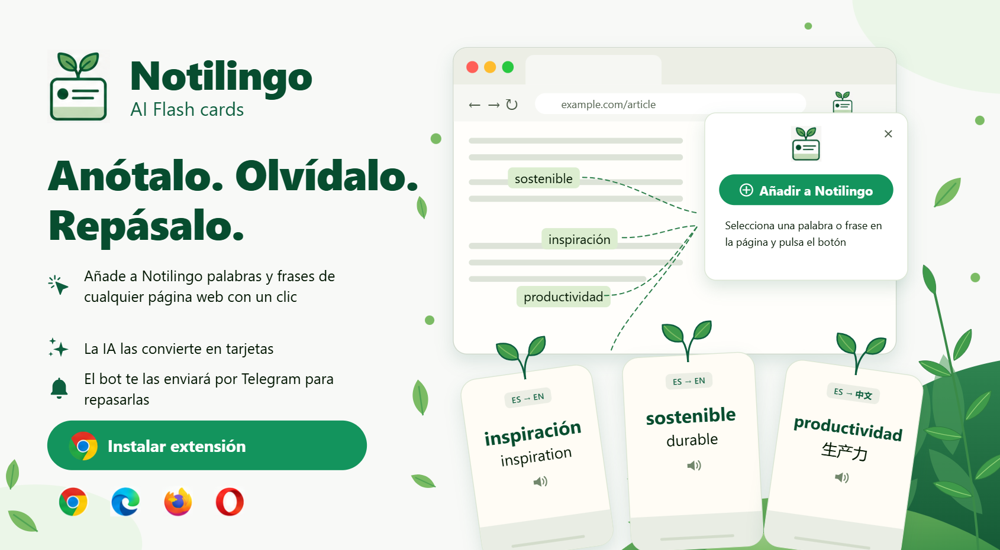

⚠️
Español
English
Русский
Українська
Ejercicios de español
🔍
✕


‹
›
Fonética y alfabeto
🔤
0. El alfabeto
audio
🔊
1. La pronunciación
audio
👅
1a. Trabalenguas
audio
Nivel inicial A0 – A1
👋
2. Presentación: ser y estar
audio
📄
2a. El primer texto
🅰️
6. Artículos
❓
5. Presentación y preguntas básicas
audio
👨👩👧
3. Los Díaz López
audio
❔
3a. Palabras interrogativas
📝
4. Presente de Indicativo
audio
🔀
4a. Presente de Indicativo — verbos irregulares
🔁
7. Verbos reflexivos
🍽️
7a. Verbos reflexivos. Comidas
👪
8. La familia
audio
📅
8. Mi día
audio
🌅
9. Por la mañana
audio
🎧
10. Numerales 1–100
audio
🔢
11. Ejercicio de numerales
🎧
12. Numerales 100 – 10 millones
audio
📖
13. Vocabulario inicial y 5 textos
audio
🧮
28. Numerales complejos
audio
🔢
45. Repaso de números
audio
⚡
48. Acciones inmediatas
Vocabulario
📚
Vocabulario — 34 días
audio
🖼️
Tarjetas de vocabulario
🗯️
Modismos coloquiales y hacer/poner
😲
50. Expresiones emotivas
audio
📄
Vocabulario A1.1
PDF
📝
Vocabulario A1.2
DOCX
📝
Vocabulario días 1–14
DOCX
Textos y diálogos A1
🏠
14. La casa de Marta
audio
🎙️
15. Rosario Martínez
audio
💬
17. Conversación
🏡
20. La casa y la vida cotidiana
audio
🛋️
Interiores
audio
Gramática A1 – A2
🔧
23. Perífrasis verbales — ejercicios
🔤
25. Pronombres personales como CD y CI
🔤
25a. Pronombres personales como CD y CI. Parte 2
📍
25b. Lugar de los pronombres
🔧
26. Perífrasis verbales
audio
📌
27. Participio Pasado y Pretérito Perfecto de Indicativo
👆
28. Imperativo afirmativo. Parte 2
👆
29. Imperativo afirmativo con vos
👆
30. Imperativo afirmativo
✋
31. Ejercicio de Imperativo
🅰️
33a. Artículos — ejercicios interactivos
Tiempos verbales A2 – B1
⏱️
28. Pretérito Perfecto de Indicativo
audio
⏮️
32. Pretérito Indefinido de Indicativo
⏪
33. Pluscuamperfecto de Indicativo
📊
35. Perfecto, Indefinido y Pluscuamperfecto
🗓️
37. Repaso de los tiempos de Indicativo
🎯
39. El verbo tratar
📋
44. Repaso de los tiempos verbales
🔄
47. Pretérito Imperfecto de Indicativo
🌀
64. Presente de Subjuntivo
🗣️
Viaje por los tiempos
🔗
62. Pares de sustantivos
🧩
63. Prefijos
Repaso y control A1
💼
16. Autoevaluación Tema 3. El trabajo
audio
✅
21. Repaso general A1 (parte A)
✅
22. Repaso general A1 (parte B)
🗣️
23. Ejercicios comunicativos A0–A1
audio
🏆
46. ¿Quieres ser millonario?
🎤
59. Tareas comunicativas
Países y geografía
🏙️
24. Buenos Aires interactivo
audio
📄
Nombres geográficos
PDF
🌍
5a. España y Latinoamérica
audio
🏛️
53. Historia de España
audio
🏔️
55. La geografía de Argentina
🗺️
56. La geografía de España
audio
Textos e historias A2 – B1
🃏
16. El caso de la tarjeta azul
audio
✈️
18. El viaje
audio
☕
19. En una cafetería de Buenos Aires
💑
34. David y Ofelia
audio
🐾
36. Luna y Mora
audio
📦
38. El misterio de la caja
audio
📦
46. La mudanza
audio
📦
46a. La mudanza con traducción
💰
43. El ricachón tacaño
audio
🗨️
49. Conversaciones sobre el pasado
📿
57. Collar de jade
🗓️
58. La semana
audio
🎧
Viajas sin sorpresas
mp3
Situaciones de la vida
🏘️
Situación: alquiler de vivienda
📄 PDF
🏦
Situación: en el banco
📄 PDF
🩺
Situación: en el médico
📄 PDF
🥘
40. La gastronomía española
audio
Español en Marcha A1 – A2
🛋️
Interiores
audio
🛏️
Vivienda e interiores
🏡
Viaje y patio
audio
🗨️
Comunicación y cultura
audio
🍽️
Comer fuera de casa
🎭
Actividades de tiempo libre
audio
👆
Uso del imperativo afirmativo
audio
🍲
Comidas y costumbres
audio
🧠
Carácter, rutina, ser y estar
audio
🌐
Costumbres
audio
🏘️
Un lugar para vivir
🗓️
¿Qué has hecho el fin de semana?
audio
🧩
Tiempo libre · Autoevaluación — pág. 144
audio
Muerte en Valencia — novela policíaca con tests
🕵️
Muerte en Valencia
audio
📝
Test: partes I y II
📝
Test: partes I, II y III
🔍
Test: parte IV
🔁
Ejercicios de repaso
Caribe, amor y muerte — novela con audio
🎧
Caribe, amor y muerte — Mónica Castro
mp3
📄 PDF
🎧
Caribe, amor y muerte — capítulos 1–3
mp3
🎧
Caribe, amor y muerte — capítulo 4
mp3
🎧
Caribe, amor y muerte — capítulo 5
mp3
🎧
Caribe, amor y muerte — capítulos 6–7
mp3
🎧
Caribe, amor y muerte — capítulos 8–11
mp3
🏝️
Tareas capítulos 3 y 4
audio
🏝️
Tareas capítulos 5 y 6
audio
Literatura y cultura
🤖
54. Cuánto se divertían — Isaac Asimov
🌹
60. Caricia — Gabriela Mistral
audio
📜
61. Versos para aprender
audio
💡
51. Dichos y proverbios
audio
📄
Dichos
PDF